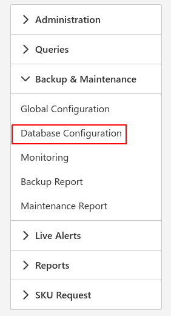

Introduction
Here you can select the certain databases you would like to apply your configs to as well as view the setup configs.
To get started select the backup and maintenance Icon and choose database configuration:

Make use of the database groups to populate the below table of databases with the instances in the database group.
Bulk Update
Here you first select all the databases you wish to configure on the right and click the 'Bulk Update' button on the top right of the table.

This will then bring up the following menu:

Here if you so choose you can change the following settings if you do not want the global default settings applied:
- Full Backup Schedule and path
- Log Backup Schedule and path
- Maintenance Backup Schedule
- Rebuild Indexes Schedule
You can choose to rebuild indexes which will reduce fragmentation in your indexes. Get the best use out of this if you have a really big database with big tables.
Note
The log backup schedule is only available when the recovery model is set to Full.
If you wish to have more control over the bulk updates you can export as a CSV and adjust the settings in excel and then simply import the CSV when you are done.
Configs can also be set for individual databases.
Edit the configuration for a single database in the same way as you'd do a group of databases.